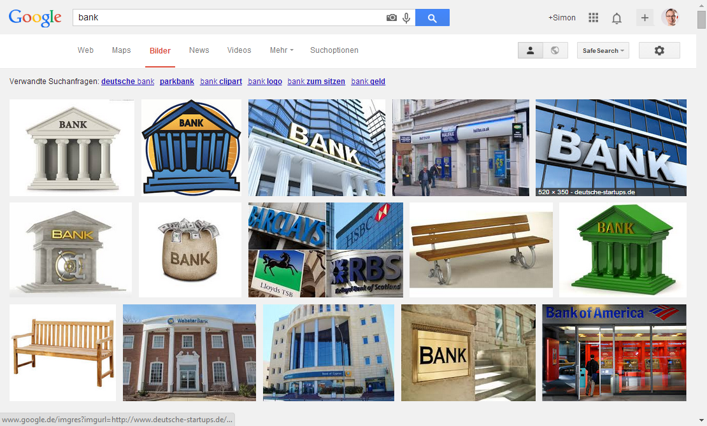

Semantic Web
Linked Data
Kurze Einführung
Simon Heimler (Mai 2014)
www.fannon.de
Einfach Fragen stellen!
Meine Perspektive: Eher technisch.
Ich verkaufe nichts.
Übersicht
0. Einführung
1. Was ist das Semantic Web?
2. Anwendungsgebiete
3. Technik / Vertiefung
4. Ausblick
Einführung
Das "alte" Web
Warum versteht uns die Maschine nicht?
Kommunikation
Damit Kommunikation gelingt...
Gemeinsame Basis (Schriftzeichen)
Gemeinsames Vokabular
Gemeinsames Konzept der Dinge (Kontext, Kultur)
Das Web für eine Maschine
Gemeinsame Basis (Syntax / Datenformat)
Gemeinsames Vokabular (Semantik)
Gemeinsames Konzept der Dinge (Ontologie)
Das Web ist für Menschen gemacht, nicht für Maschinen
Intelligentes Web?
Beginnt Realität zu werden
Wie?
Das Semantic Web
Begriffe
- Semantic Web (Akademiker?)
- Linked Data (Firmen?)
- Web 3.0 (Medien/Marketing?)
[Backspace]
Grund für den Erfolg des WWW?
Welches Konzept?
Links
Einzelne Dokumente

Webseiten
Verlinkung von Dokumenten

Semantic Web
Verlinkung von Informationen


Tim Berners Lee (Erfinder des WWW)
The Semantic Web is an extension of the current web in which information is given well-defined meaning, better enabling computers and people to work in cooperation.Tim Berners-Lee, 2001
- Erweiterung des aktuellen Webs
- Informationen mit Bedeutung angereichert
- Ziel: Mensch-Computer-Kooperation
Beispiel: Klassisches Web
Der Semantic Web Workshop beginnt am 8. Mai um 9:30.
- Menschenlesbar
- Maschinenlesbar
Achtung Code!
Beispiel: Semantic Web
Der Semantic Web Workshop beginnt am
Der Semantic Web Workshop beginnt am 8. Mai um 9:30.
- Menschenlesbar
- Maschinenlesbar
Im kleinen
Visitenkarte im hCard Format
Große semantische Datenbanken
Linking Open Data cloud

Komplex?
Hängt stark vom Anwendungsgebiet ab!
Anwendungsgebiete
Branchen
Bisher hauptsächlich:
- Wissenschaft (Human Brain Project)
- Bildung (DbPedia)
- Regierung (openGov)
- Big Corporations (Google)
SEO
Maschinenlesbare Webseiten
Vokabular und Konzept:
- Google, Yahoo, MS, etc.: schema.org
- Facebook: OpenGraph
Daten-Annotation
Daten-Aggregation
Daten-Kombination
Künstliche Intelligenz
...
Technik
Semantic Web Stack

RDF
Datenspeicherung
| Subjekt | Prädikat | Objekt |
|---|---|---|
| http://facebook.com/A | http://schema.org/knows | http://facebook.com/B |
RDF
Ein Konzept, viele Dialekte:
- Turtle (Text)
- RDFa (HTML)
- Microdata (HTML)
- JSON-LD (JSON)
SPARQL
- Graphenbasierte Query-Language
- Standardkonformer RESTful Webservice
4 Linked Data Regeln
- Use URIs to denote things.
- Use HTTP URIs so that these things can be referred to and looked up ("dereferenced") by people and user agents.
- Provide useful information about the thing when its URI is dereferenced, leveraging standards such as RDF, SPARQL.
- Include links to other related things (using their URIs) when publishing data on the Web.
Ausblick
Heute
- Bisher eher unbekannt
- Nur ein sehr geringer Teil des Webs ist semantisch
- Durchbruch steht noch aus
- Einige große Firmen und Persönlichkeiten stehen dahinter
- Es gibt schon große Datenbanken / Anwendungen
Zukunft
- Sollte noch einfacher und konkreter werden
- Einige Probleme sind noch zu lösen (z.B. Trust)
- Muss von der "normalen" Web-Community noch angenommen werden
- Prognose: SEO als Vorreiter?
Fragen?
Empfehlungen
- Tim Berners-Lee - The next Web (2009) http://www.ted.com/talks/tim_berners_lee_on_the_next_web
- Manuel Sporny - What is Linked Data? (2013) http://www.youtube.com/watch?v=4x_xzT5eF5Q
Folien online:
http://fannon.de/p/web-components